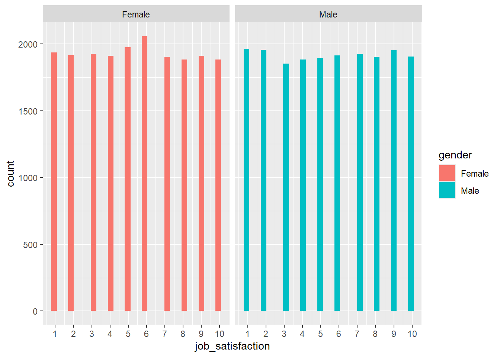
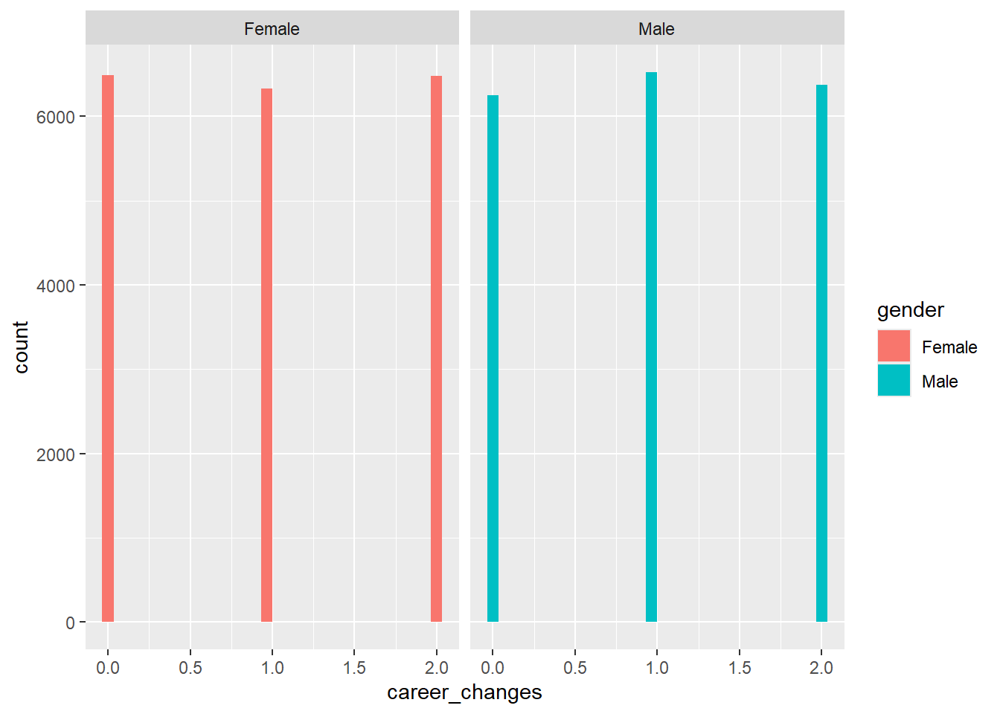
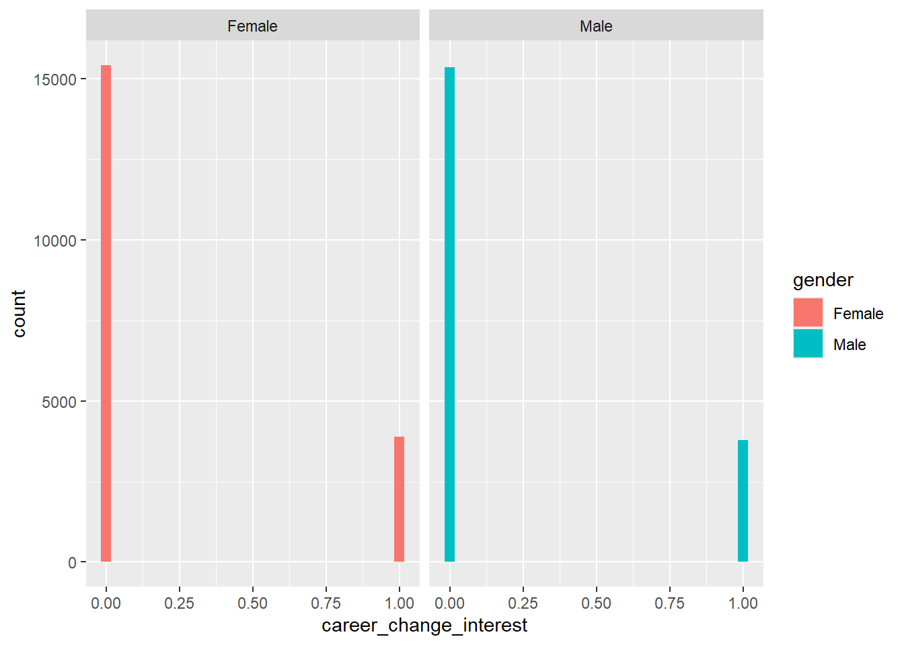
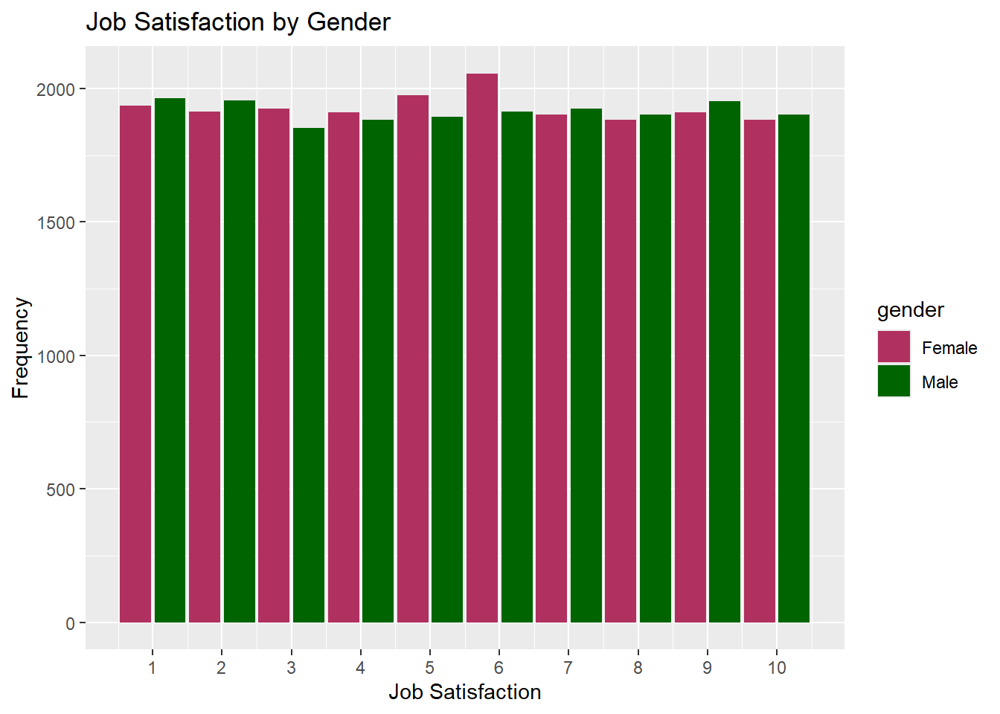
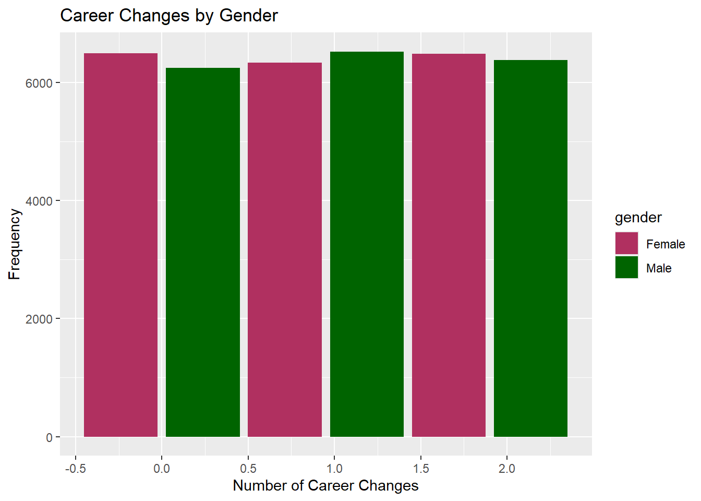
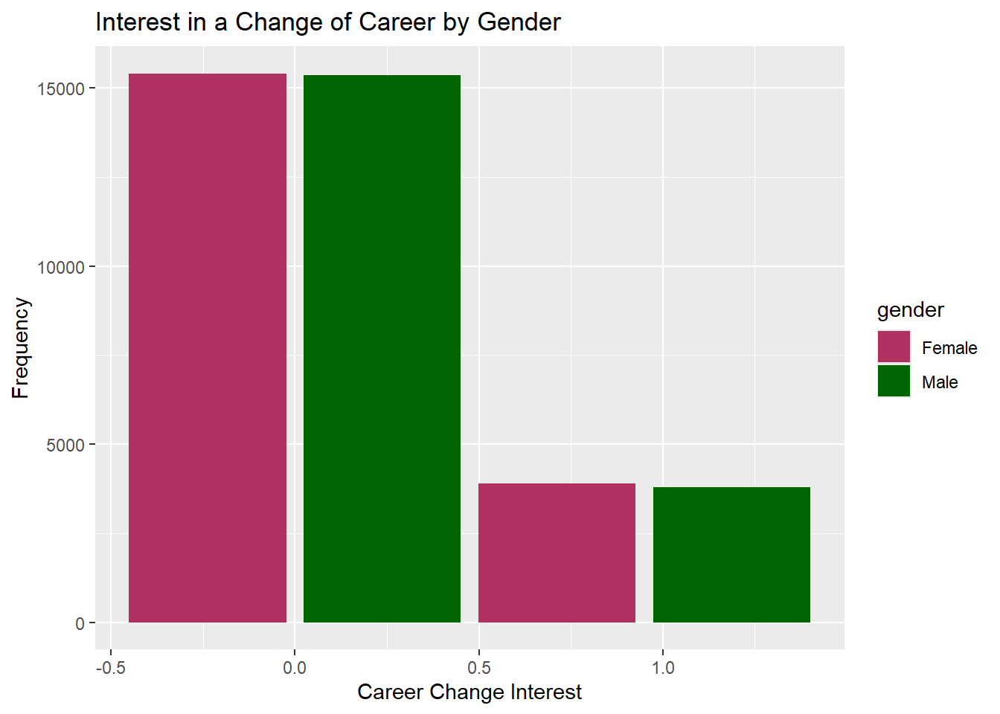
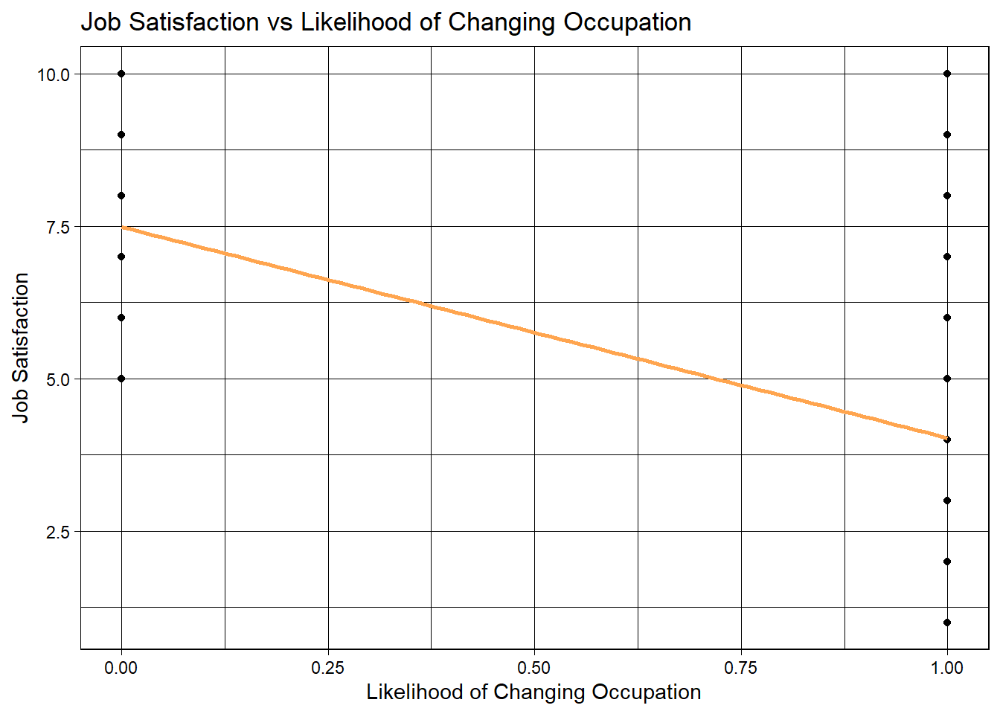

The objective of this analysis is to explore the factors that may or may not hold influence over an individual’s likelihood to change careers, focusing on variables such as job satisfaction, work-life balance, salary, family influence, and current occupation.
This dataset of over 30,000 entries of 22 attributes regarding each individual’s personal details, job satisfaction, and more, provides excellent insight into the reasons individuals change careers. The dataset focuses on the possible sources of influence that could push someone to both change careers, and also to stay in one.
Data Preparation
Loading Packages
library(tidyverse)
── Attaching core tidyverse packages ──────────────────────── tidyverse 2.0.0 ──
✔ dplyr 1.1.4 ✔ readr 2.1.5
✔ forcats 1.0.0 ✔ stringr 1.5.1
✔ ggplot2 3.5.1 ✔ tibble 3.2.1
✔ lubridate 1.9.3 ✔ tidyr 1.3.1
✔ purrr 1.0.2
── Conflicts ────────────────────────────────────────── tidyverse_conflicts() ──
✖ dplyr::filter() masks stats::filter()
✖ dplyr::lag() masks stats::lag()
ℹ Use the conflicted package (<http://conflicted.r-lib.org/>) to force all conflicts to become errors
library(broom)library(caret)
Loading required package: lattice
Attaching package: 'caret'
The following object is masked from 'package:purrr':
lift
library(ggthemes)library(furniture)
Cleaning the Data
data <-read.csv("data/career.csv")data <- data[, c(1, 2, 3, 4, 5, 6, 7, 8, 9, 11, 12, 13, 15, 16, 21, 23)]colnames(data) <-c("field_of_study", # categorical string: field of study during education"current_occupation", # categorical string: current industry employed in"age", # integer: current age"gender", # categorical string: gender of individual"years_experience", # integer: # of years having been in the workforce"education_level", # ordinal string: highest level of education completed"industry_growth_rate", # ordinal string: growth rate of the current industry employed in"job_satisfaction", # integer (1-10 scale): rating of current job satisfaction"work_life_balance", # integer (1-10 scale): rating of perceived work-life balance"salary", # integer: annual salary in USD"job_security", # integer (1-10 scale): rating of perceived job security"career_change_interest", # boolean (1 = Yes, 0 = No): whether interested in changing industries"family_influence", # ordinal string: degree of influence family had on career choice"mentor_availability", # boolean (1 = Yes, 0 = No): access to a mentor in current occupation"career_changes", # integer: # of career changes in the past"likely_to_change_occupation") # boolean (1 = Yes, 0 = No): whether likely to change occupation
Although many attributes are very useful, given that this analysis won’t require all 22 of them, there’s no need to include each and every one. We also changed each variable name to better fit common naming conventions, and to better clarify their purpose.
Data Analysis/Visualization
Analysis #1 Two-Sided, Two-Sample t-test
#checking parameters and creating a summary. The chosen variables are the level of job satisfaction, the number of career changes, and the stated interest in a career change. data %>%group_by(gender) %>%summarize(# separating by gender to examine differences in ability to move between jobs n =n(), MeanSatisfaction =mean(job_satisfaction),MeanCareerChanges =mean(career_changes),MeanCareerChangeInterest =mean(career_change_interest),#creating the means of the variables SDSatisfaction =sd(job_satisfaction),SDCareerChanges =sd(career_changes),SDCareerChangeInterest =sd(career_change_interest),#calulating the standard deviationSESatisfaction =sd(job_satisfaction)/sqrt(n()),SECareerChanges =sd(career_changes)/sqrt(n()),SECareerChangeInterest =sd(career_change_interest)/sqrt(n())#calculating standard error )
#plotting histograms of data to check distribution -> non-normal distribution makes anova impossible data %>%ggplot(aes(x = job_satisfaction)) +geom_histogram(aes(fill = gender)) +facet_grid(cols =vars(gender)) +scale_x_continuous(breaks =seq(0, 10, by =1))
`stat_bin()` using `bins = 30`. Pick better value with `binwidth`.

data %>%ggplot(aes(x = career_changes)) +geom_histogram(aes(fill = gender)) +facet_grid(cols =vars(gender))
`stat_bin()` using `bins = 30`. Pick better value with `binwidth`.

data %>%ggplot(aes(x = career_change_interest)) +geom_histogram(aes(fill = gender)) +facet_grid(cols =vars(gender))
`stat_bin()` using `bins = 30`. Pick better value with `binwidth`.

The goal of this analysis was to determine if there was a gendered difference affecting desire to leave jobs based on the hypothesis that women may have a harder time leaving jobs due to discrimination in hiring processes. Because we are looking to analyse two populations (men and women) and examine differences in their means, a t-test was selected. The data shows a weak difference between the selected variables: job satisfaction, the number of previous career changes, and current interest in a career change. These variables were selected on the basis that they seemed the most likely to be able to predict differences in willingness to move between jobs, with job satisfaction and career change interest predicting current willingness to look for a job and previous career changes predicting if there were differences overall.
#plotting bar graphs of data to examine differences due to gender visuallydata %>%ggplot(aes(x = job_satisfaction)) +geom_histogram(aes(fill = gender),binwidth =1,position ="dodge2") +scale_fill_manual(values =c("maroon","darkgreen")) +scale_x_continuous(breaks =seq(0, 10, by =1)) +labs(x ="Job Satisfaction",y ="Frequency",title ="Job Satisfaction by Gender")

data %>%ggplot(aes(x = career_changes)) +geom_histogram(aes(fill = gender),binwidth =0.95,position ="dodge2") +scale_fill_manual(values =c("maroon","darkgreen")) +labs(x ="Number of Career Changes",y ="Frequency",title ="Career Changes by Gender")

data %>%ggplot(aes(x = career_change_interest)) +geom_histogram(aes(fill = gender),binwidth =0.95,position ="dodge2") +scale_fill_manual(values =c("maroon","darkgreen")) +labs(x ="Career Change Interest",y ="Frequency",title ="Interest in a Change of Career by Gender")

Looking at the raw data, job satisfaction showed more women had a job satisfaction that was around 5, and men appear to have been more likely to be on either end of the spectrum, which could result in an overall mean being similar. Even this pattern is subtle though, and likely would also be statistically insignificant. The other two variables related to career changes were less varied, and were very close in mean in both men and women.
#creating vectors from each metric separated by gender to compare by t-testjob_satisfaction_m <- data %>%filter(gender =="Male") %>%select(job_satisfaction)job_satisfaction_w <- data %>%filter(gender =="Female") %>%select(job_satisfaction)career_changes_m <- data %>%filter(gender =="Male") %>%select(career_changes)career_changes_w <- data %>%filter(gender =="Female") %>%select(career_changes)career_change_interest_m <- data %>%filter(gender =="Male") %>%select(career_change_interest)career_change_interest_w <- data %>%filter(gender =="Female") %>%select(career_change_interest)#using a threshold of 0.05 for confidence alpha <-0.05t.test(job_satisfaction_m,job_satisfaction_w,alternative ="two.sided",conf.level =1-alpha)
Welch Two Sample t-test
data: job_satisfaction_m and job_satisfaction_w
t = 0.44136, df = 38431, p-value = 0.659
alternative hypothesis: true difference in means is not equal to 0
95 percent confidence interval:
-0.04446771 0.07031452
sample estimates:
mean of x mean of y
5.496161 5.483237
Welch Two Sample t-test
data: career_changes_m and career_changes_w
t = 0.83454, df = 38442, p-value = 0.404
alternative hypothesis: true difference in means is not equal to 0
95 percent confidence interval:
-0.009367174 0.023258640
sample estimates:
mean of x mean of y
1.0067903 0.9998446
Welch Two Sample t-test
data: career_change_interest_m and career_change_interest_w
t = -0.84445, df = 38442, p-value = 0.3984
alternative hypothesis: true difference in means is not equal to 0
95 percent confidence interval:
-0.011440517 0.004550882
sample estimates:
mean of x mean of y
0.1981718 0.2016167
Interestingly, the p-value of career change interest was smallest, although still very far from significant. More women than men showed interest in a career change, which could be interpreted as women being more likely to move careers in the future. In combination with the number of women having changed careers twice being greater than the number of men who have changed careers twice, this is interesting. However, the data that is present here indicates that this difference is due to random chance and not a statistically significant observable difference in job satisfaction, number of career changes, or indication of interest in a new career change between men and women.
Analysis #2: Factors Influencing Job Satisfaction Using Chi Square Testing and Linear Regression
# looking at these correlation variables correlation_vars <-c("work_life_balance", "salary", "job_security", "years_experience", "likely_to_change_occupation")# correlation based on job satisfaction correlation_results <-cor(data[, correlation_vars], data$job_satisfaction, use ="complete.obs")print("Correlation Results:")
# significance to our correlaTion values from above? correlation_test_results <-lapply(correlation_vars, function(var) {cor.test(data[[var]], data$job_satisfaction) })
From our correlation analysis results where we look at job satisfaction rates being compared against numerical variables work life balance, job security, salary, and years of experience, we can see that there is a near zero correlation, compared to the correlation of likelihood of changing occupations. Job satisfaction and likelihood of changing occupations has a strong negative correlation of -0.5955501, whereas the other variables have a correlation of around -0.006 to 0.003, which is relatively weak. The negative correlation between job satisfaction and likelihood of changing occupations tells us that the more unsatisfied one is with there job, the more likely they are to consider changing occupations, which is a realistic relation.
Even when looking at the p values that we obtain from the correlation testing, changing occupations has the most statistically significant p value of < 2.2e-16, which further backs up our negative correlation with job satisfaction. Other variables all have p values above 0.05, disproving their significance in regards to job satisfaction.
# doing chi square test on non numerical/categorical variables categorical_vars <-c("field_of_study", "industry_growth_rate", "family_influence")for (var in categorical_vars) { chi_square_table <-table(data[[var]], data$job_satisfaction) chi_square_result <-chisq.test(chi_square_table)print(paste("Chi-square test for", var))print(chi_square_result) }
[1] "Chi-square test for field_of_study"
Pearson's Chi-squared test
data: chi_square_table
X-squared = 86.492, df = 81, p-value = 0.3177
[1] "Chi-square test for industry_growth_rate"
Pearson's Chi-squared test
data: chi_square_table
X-squared = 20.301, df = 18, p-value = 0.3161
[1] "Chi-square test for family_influence"
Pearson's Chi-squared test
data: chi_square_table
X-squared = 29.773, df = 27, p-value = 0.3244
When looking at categorical variables field of study, industry growth rate, and family influence, our chi square tests did mostly to approve of the lack of significant association between those variables and job satisfaction as p values among these variable were above our significant value of 0.05.
# lOoking at job satisfaction vs changing occupationggplot(data, aes(x = likely_to_change_occupation, y = job_satisfaction)) +geom_point(alpha =0.5) +geom_smooth(method ="lm", se =FALSE, color ="tan1") +ggtitle("Job Satisfaction vs Likelihood of Changing Occupation") +xlab("Likelihood of Changing Occupation") +ylab("Job Satisfaction") +theme_linedraw()
`geom_smooth()` using formula = 'y ~ x'

The linear regression model backs up our correlation analysis results as the y intercept of the regression analysis equation is 5.56, which essentially tell us that if all other variables had a value of 0, this is where job satisfactions would be at.. This value is statistically significant with a p value of <2e^-16 (obtained from the linear regression summary table). another variable that we can consider that has some sort of an impact on job satisfaction could be ones lack of family impact (none) as its p value is 0.0691, which is closer to our threshold of 0.05 in comparison to our other variables that all have p values greater than 0.17 (statistically more insignificant). From this table we can entertain the idea that having no family influence may also impact job satisfaction, albeit that its p value is still above 0.05.
Overall, we can see that the strongest variable with the greatest correlation to job satisfaction is likelihood of changing occupations, as shown by the correlation analysis, and linear regression model. However, data from the other variable just may not be conclusive enough for us to have a linear regression model with a stronger fit. Further analyses can bring more insight into likelihood of changing occupation can perhaps give more insight on our other variables.
Analysis #3 - Multiple Logistic Regression Analysis - Ratio of Career Change Interest
In the dataset, code the family_influence variable as an ordered factor with levels “None”, “Low”, “Medium”, and “High” to represent escalating family influence levels. To show particular occupations of interest, code the current_occupation variable in the data dataset.
Generate a summary table of the dataset data with rows for variables gender, family_influence, current_occupation, and job_security. The table is split by the variable career_change_interest, showing grouped statistics for each level of interest. The row_wise = TRUE argument arranges the summary statistics row-wise, and the test = TRUE argument performs statistical tests (e.g., chi-squared or t-tests) to compare groups across career_change_interest.
Use a logistic regression model (glm) to see how different factors affect the results. After extracting the model summary’s coefficients (except from the intercept), calculate the odds ratios’ (OR) 95% confidence intervals and round to two decimal places. Next, show a subset of the ORmtx data frame that includes p-values, OR, and confidence intervals.
OR <-round(exp(coef[,1]),2)p.value =round(coef[,4],4)ORmtx <-data.frame(OR, Lower = CI[,1], Upper=CI[,2], p.value ) ORmtx$Index <-seq(1:nrow(ORmtx))ORmtx$Label <-c("Gender:Male vs. Female","Family Influence: Low vs. None","Family Influence: Medium vs. None","Family Influence: High vs. None","Current Occupation:Artist vs. Software Developer"," Mechanical Engineer vs. Software Developer"," Business Analyst vs. Software Developer"," Lawyer vs. Software Developer"," Economist vs. Software Developer"," Teacher vs. Software Developer"," Doctor vs. Software Developer"," Biologist vs. Software Developer","Job.Security" )ORmtx[,c("OR","Lower","Upper","p.value" )]
To visualize odds ratios (ORs) with 95% confidence intervals (CIs), make a forest plot. The odds ratios are along the x-axis at points (shape = 18, size = 5) that match to indices on the y-axis. To depict the 95% confidence intervals, add horizontal error bars with lower and upper bounds.
Gender: There is no statistical evidence of association between gender and career change influence.
Family Influence: The odds of career change interest for those had low family influence is 0.92 times the odds of those had no family influence (95%: 0.85 to 0.99, p=0.0269). No statistical differences comparing medium or high family influences to non family influence.
Current Occupation: The odds of career change interest for biologists is 1.19 times the odds for software developers (95%CI: 1.06 to 1.33, p=0.0026). Teachers and doctors also shows trends of higher odds of career change interests comparing to software developers.The other occupations do not have very different odds of career change interest as software developers.
Job Security: Higher Job security shows somewhat lower odds of career change interest (OR=0.99 for each unit change, 95%CI: 0.98 to 1, p=0.0926).
Key Findings and Summary
Findings:
Analysis #1:
Our findings seem to suggest that gender does not play a major role in predicting career change interest or job satisfaction within the scope of the current dataset.
Analysis #2:
Job satisfaction seems to have a strongest correlation with the likelihood of changing occupations, while other factors had far weaker relationships.
Analysis #3:
Interest in changing careers seems to be significantly influenced by work and family influence, with differing results based on particular circumstances. Although they are part of the model, gender and job stability do not show statistical significance with interest in changing careers in this study.
Summary:
This analysis explored factors influencing career change, focusing on job satisfaction, work-life balance, salary, family influence, and current occupation. Three key analyses were conducted:
A t-test found no significant gender differences in job satisfaction, career changes, or interest in career change.
Job satisfaction showed a strong negative correlation with the likelihood of changing careers, while other factors like salary and work-life balance had weak correlations.
Logistic regression revealed that family influence and current occupation were significant in predicting career change interest, while gender and job security had little effect.
Overall, job satisfaction, family influence, and occupation type were the most important factors influencing career change interest, while gender and job security showed minimal impact.